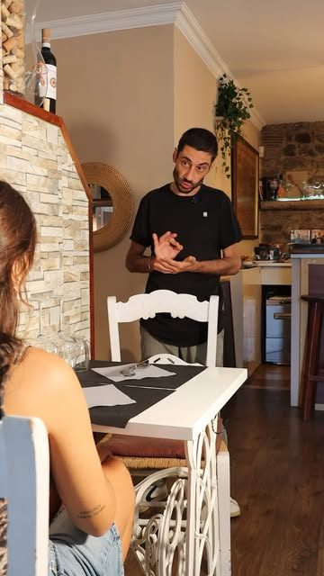
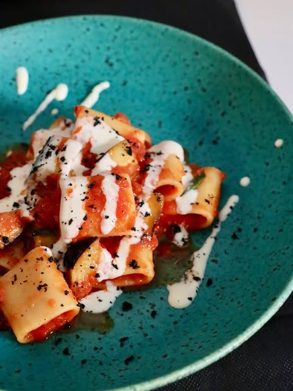
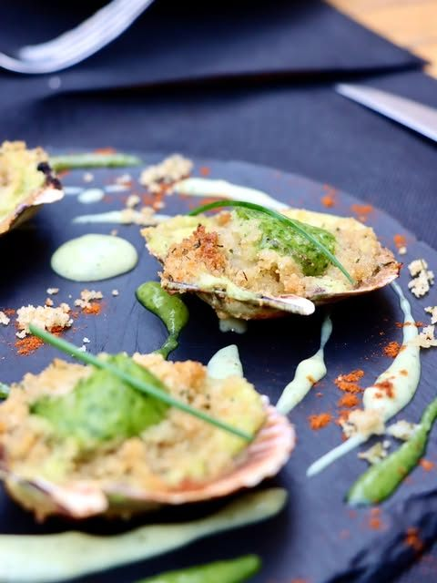
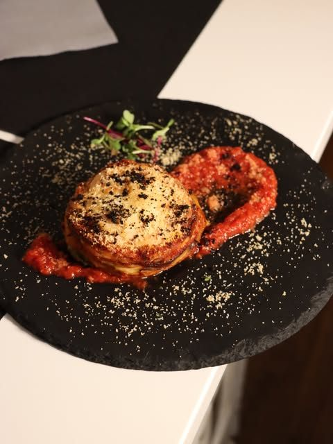
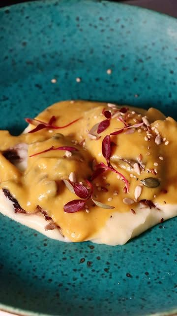
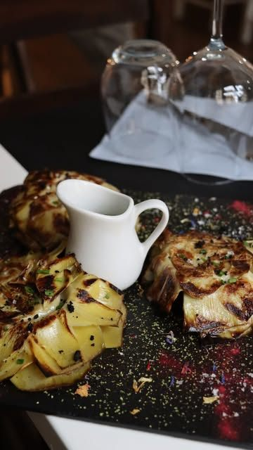
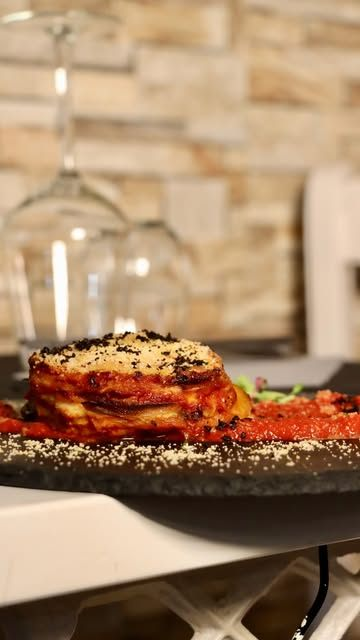
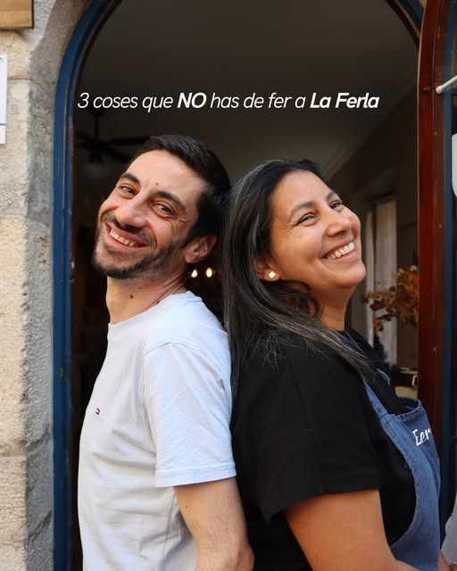
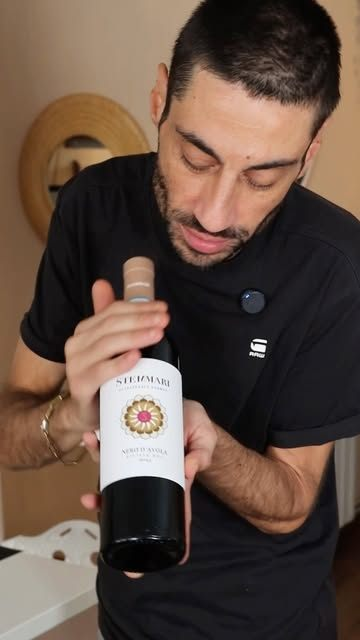

Restaurant · Barri Vell de Girona
Cocina siciliana y mediterránea junto a la Catedral
Un restaurante pequeño y acogedor en la Claveria, a unos pasos de la Catedral de Girona. Pocas mesas, platos hechos al momento y Marco en la sala.
4,8 en Google · 556 reseñas
Sicilia y el Mediterráneo, en el Barri Vell
En La Ferla mezclamos la cocina siciliana con la mediterránea de aquí: pasta, pescado, carne y postres hechos en casa, con producto del día.
Es un sitio pequeño e íntimo, ideal para una cena tranquila o una ocasión especial. Si tienes alguna alergia o comes vegetariano, dínoslo: buscamos una alternativa.

Nuestros platos
Pasa la vela por encima de cada plato para iluminarlo.Toca un plato para mover la luz.






La carta cambia con el producto de temporada. Pregúntanos por los platos del día.

Marco te recibe
Marco lleva la sala. Te explica cada plato, te aconseja el vino y está pendiente de que la cena salga perfecta. Es lo que más repiten nuestros clientes.
«Buena comida, buen servicio y una muy buena atención por parte de Marco.»
Google

4,8 en Google con 556 reseñas
«Si no es el mejor restaurante de Girona, está sin duda entre los mejores italianos que hemos probado. […] El chico que lo lleva es inmejorable: atento, cercano, profesional y pendiente de cada detalle.»
Google
«Gastronomía fusión italo-mediterránea de alto nivel, con platos muy cuidados y sabores refinados. El restaurante es pequeñito y muy acogedor, ideal para una cena especial.»
Google
«Vaya sorpresa de restaurante italiano pegado al lado de la catedral de Girona […] Comida italiana fatta a casa, postres sorprendentes y muy buen trato y consejos. Recomiendo reservar con antelación.»
Google
«El mejor restaurante de Girona, sin duda. […] la manera de explicar los platos, la delicadeza y el detalle en el servicio, la presentación… es una experiencia! el risotto y la naranja»
Google
Reserva tu mesa
Somos pocas mesas: mejor reservar con antelación, sobre todo el fin de semana. Escríbenos por WhatsApp o llámanos.
- Dirección
- Carrer de la Claveria, 6 · 17004 Girona
Barri Vell, junto a la Catedral - Horario
- Miércoles: 19:00 – 23:00
Jueves: 19:30 – 23:30
Sábado: 13:00 – 15:30 · 20:00 – 23:30
Martes cerrado. Confirma el resto de días al reservar. - @laferlagirona